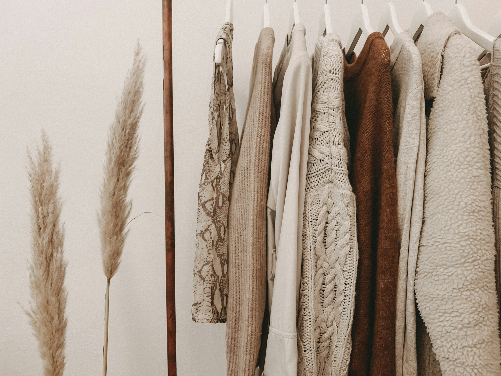
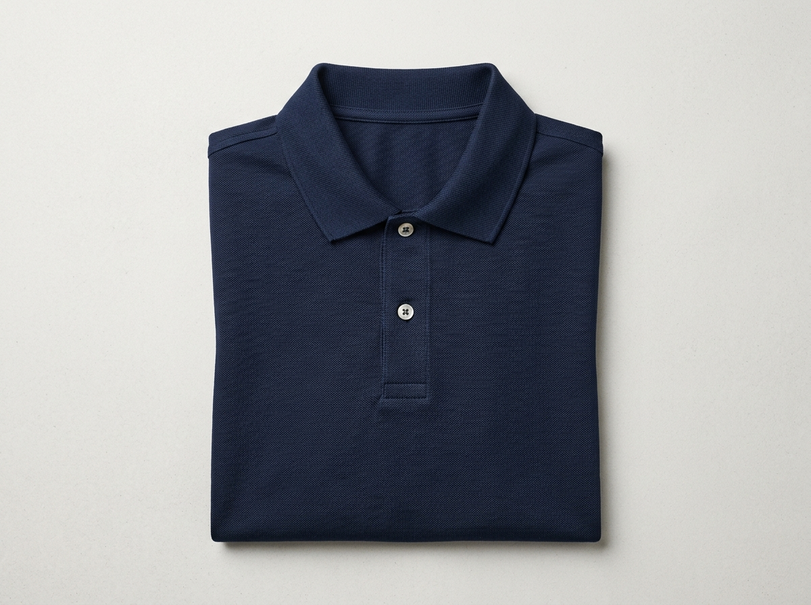
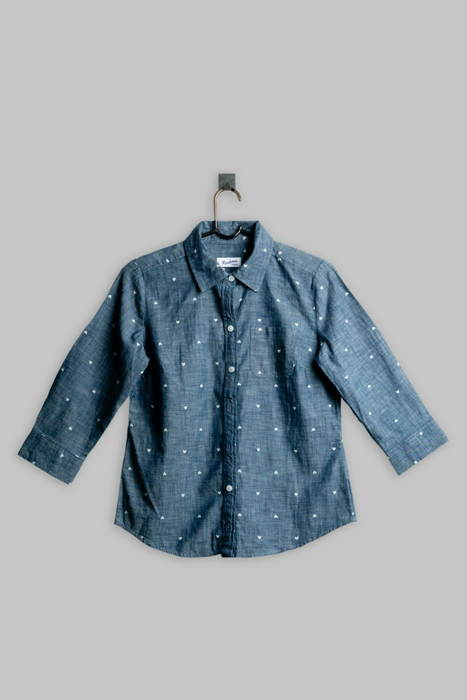
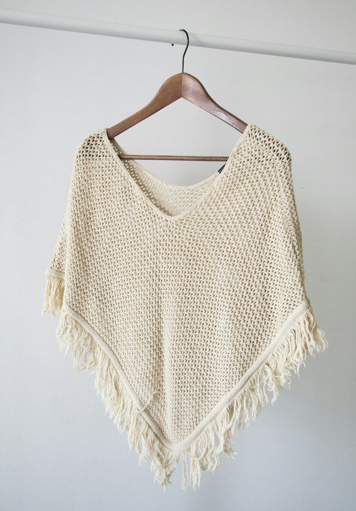
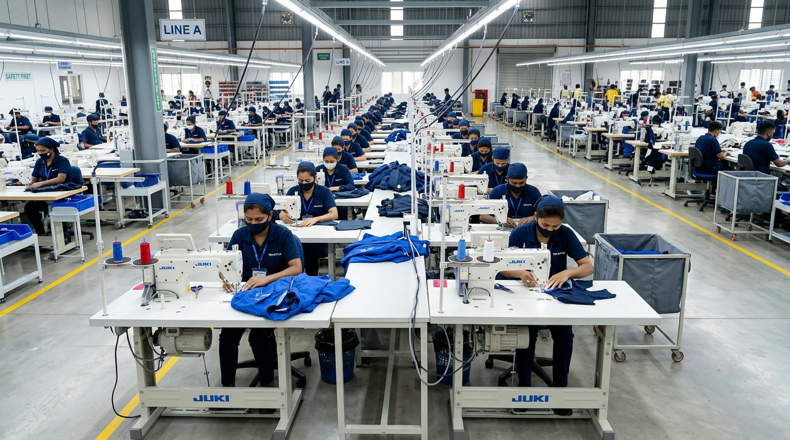

Cotton Fabric
100% GOTS organic combed cotton, BCI certified, 140-280 GSM. Mercerized finish, anti-pilling, and OEKO-TEX Standard 100 Class 1.

Certified organic knits, luxury worsted wools, European flax linens, and selvedge denims engineered for international brands. Pre-tested to AQL 1.5 standards with immediate shade-band and swatch card dispatch.
Precision-tested textile formulations for global fashion brands. Sourced from certified ethical mills and custom-knit to your exact weight, width, and finish requirements.
100% GOTS organic combed cotton, BCI certified, 140-280 GSM. Mercerized finish, anti-pilling, and OEKO-TEX Standard 100 Class 1.
Fine Merino and recycled wool yarn blends, 260-380 GSM. Excellent thermal insulation, breathable, and luxury soft drape.
100% European flax certified linen and cotton-linen blends, 160-240 GSM. Pre-shrunk with enzyme-softened vintage slub feel.
Crepe-twist sheer georgette and chiffon blends, 80-130 GSM. Ideal for lightweight feminine blouses, flowy dresses, and scarves.
Indigo dyed ring-spun stretch denim and rigid selvedge, 9.5 to 14.5 oz. Laser-wash friendly and ozone fading ready.
LWG (Leather Working Group) certified ethical lambskin, suede, and plant-based vegan leather for trims and outerwear.
Sample tech-packs available with immediate dispatch of shade books and size-set trial garments.

Double piqué knit with mother-of-pearl buttons and reinforced neck tape for premium golf and corporate collections.
Unstructured summer blazer with half-canvas interior, horn buttons, and AMF pick-stitch detailing.

80/2 two-ply combed Oxford weave with easy-iron resin finish and single-needle side seam construction.

100% GOTS combed organic cotton with brushed fleece interior, double-layer hood, and seamless side rib panels.
Drop-shoulder streetwear cut with thick 1.2-inch 1x1 rib collar and vintage garment dye enzyme wash.
Durable ripstop weave with water-repellent DWR finish, reinforced knee pleats, and YKK zipper closures.
Explore our custom dyeing recipes, automated cutting lines, and precision computerized sewing configurations.

Automatic knife sharpening, vacuum ply hold-down, and intelligent pattern nesting achieving 92%+ fabric yield efficiency.

Pressure dyeing machines with automated chemical dispensing ensuring delta-E color consistency below 0.6 across production batches.

Flexible unit production systems (UPS) designed for rapid line balancing, small-batch agility, and 100% in-line quality gates.